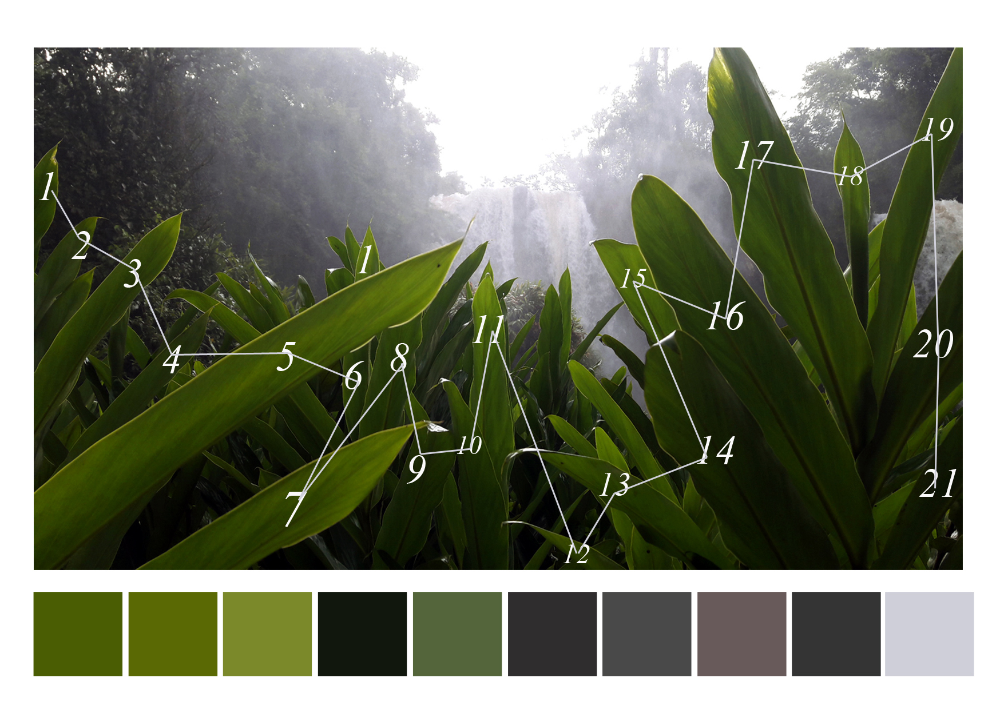

Patricio Diblasi-Artista Visual

BIO:
Me llamo Patricio Diblasi soy artista visual autodidacta, nací el 3/7/1987 en Argentina provincia de Misiones, ciudad de Posadas. En 2006 egresé del colegio provincial número 1 Martín de Moussy. En 2007 me fui a vivir y estudiar a la provincia de Córdoba las carreras de Comunicación Visual en la facultad UNC, Diseño Industrial y Gráfico en la Universidad Siglo XXI. En 2011 volví a Misiones y seguí mis estudios en Diseño Gráfico y Artes plásticas en la Facultad de artes y diseño UNAM ciudad de Oberá hasta el 2014.
Participé de las siguientes muestras:
- Saturación Discurisiva Disrputiva (2021) Museo Provincial Juan Yaparí; Posadas Misiones.
- Dialéctica Recurrente (2021) Muestra Colectiva; Galería de arte Colorín Otaño; Posadas Misiones.
- Mercado de Arte, Espacio Base (2020) Muestra Colectiva; Museo Yaparí; Posadas Misiones.
- Octubre Purete (2015) muestra colectiva junto a Matias Rivas y Francisco Sales; Museo Yaparí
- Digital (2015) Universidad cuenca del Plata.
- Entramado (2014) Muestra colectiva en centro cultural Vicente Cidade.
- Antología Insolente (2014) Universidad Gastón Dachary.
- La insuficiencia del contorno y los símbolos del deseo voluptuoso (2013)
- El imperativo implícito y el juego de los que no saben pero contestan (2013); Paseo 220 Posadas Misio nes
- La Vanidad de la sustancia (2013); Museo Juan Yaparí; Posadas Misiones.
- El depravado polimorfo y las Aspirinas metafísicas (2012); centro cultural Paseo 220; Posadas Misiones.
- Diseño de acá (2011); muestra coletiva; facultad de artes UNAM; Oberá Misiones.
- El sombrero derecho en la cabeza izquierda (2011); Laboratorio de arte y diseño Nolup; Posadas Misiones.
Porfolios:
- Flickr:aqui
- Behance:aqui